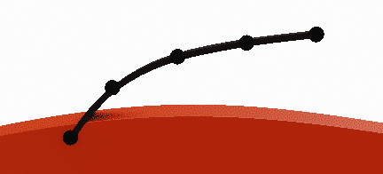

Interactive hair Grooming:¶
It best used for short, dense hair that should cover big areas uniformly (for long hair I would use 'Curves from grid surface' function - as it provides easier way guide hair IMO).
To use interactive grooming to work, you need to:
- have object with particle hair system
- be in 'Particle Edit' mode.
 Hair Grooming - panel is located in right UI Sidebar: "Hair Tool" tab (visible only in 'Particle Edit' mode)
Hair Grooming - panel is located in right UI Sidebar: "Hair Tool" tab (visible only in 'Particle Edit' mode)
In the right Sidebar(N), in 'Hair Tool' tab press 'Create Settings' button. It will create particle comb settings, for active particle system
Note: Each particle system has its own separate hair comb settings. This way you can comb multiple hair systems on one object, each slightly different. This gives you more control over hair look
Press 'Interactive Grooming' button - it will generate curve ribbons, that will be interactively updated as soon as you release your Left Mouse Button. Name of generated hair ribbons, will be the same as name of particle system. You can resume hair combing any time you want, and the generated curve ribbons will be update - as long as you will leave names the same.
Parameters:¶
- Strand width - curve ribbons width
 Points per strand - How many points generate for each spline
Points per strand - How many points generate for each spline
 Offset to tip - Move spline points more toward tip
 Offset to root - Move spline points more toward root
Offset to root - Move spline points more toward root
 Align tilt - Align ribbons tilt to surface
Align tilt - Align ribbons tilt to surface
 Embed Roots Depth - Embed strands roots into mesh surface
Embed Roots Depth - Embed strands roots into mesh surface
- Strand Smoothing - smooth generated strands (may be slow for dense hair)
- Generate children - Generate child hair strands. They will be guided by parent strands (particle hair)
- Include Parent Strands - Include parent strands when generating hair with children
- Parent strands overlay - Draw orange overlay on top of parent strands, for better visibility on dense hair (Draw Offset controls bias of overlay toward camera)
 Child count - Amount of generated children strands
Child count - Amount of generated children strands
 Placement Jittering - Randomize child strands placement
Placement Jittering - Randomize child strands placement
 Randomize length - Randomize strands length
Randomize length - Randomize strands length
 You can use particle system Density mask to control where child strands will be generated
You can use particle system Density mask to control where child strands will be generated